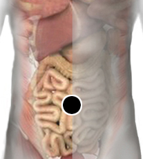

Gen, regeneración tisular
Par
gen - órgano afectado

Generalidades:
La aplicación de este par activa la regeneración de tejidos dañados.
El nombre proviene del vocablo maya Gen que significa huevo. El punto se ubica en la arteria onfalo meséntérica, es decir el ombligo. El descubridor* previene de usar el vocable Gen en lugar de ombligo.
El polo negativo en Gen (ombligo) y el positivo en el órgano afectado. Con esto se logra la regeneración de cualquier tejido, presumiblemente se sustituyen las células dañadas por células madre.
*Descubierto por el Dr. Humberto Lucio Castañeda. Presentado en octubre de 2009.